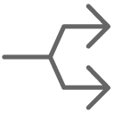

Common sections¶
Some sections are displayed on almost all screens in the detail area.
All manipulations on an element must be saved to move to another element.
Those sections allows to set information or add information to an item of the element.

A view of ProjeQtOr’s global interface¶
Description section¶
This section allows to identify items of the element.
Each element has its own description section. The description fields are not the same depending on the element or even its type.
Most of the fields available for each element offer the possibility of having a search view and an accelerator to access other elements.
Status filters¶
Switch the button display direct status filters

Status filter¶
Only existing status are visible if their are used.
Choice one of them and the item list will be filter.
This is a quick filter list by status.
Tag management¶
For project, activity and ticket elements, you can use a tag system.
This involves being able to enter keywords which will allow you to restrict the display of your lists by clicking on the desired tags.
Open the filters to allow the display of tags directly on the element title bar.
Tags management¶
Click on tle field to display the existing tags.
Tip
You can also use the up and down arrows to display and move through the drop-down list of already existing tags.
You can restrict tag creation and usage per project in global settings.
Recording of manipulations¶
If you do not save them, a message asks you to confirm either the saving, to cancel the modifications, or to continue the modifications on this same element.
Back up, cancel or continue on your data¶
The “enter” key will save the changes
The “esc” key will cancel the message and you will continue editing on the current element
Allocations section¶
This section allows to manage resource allocation to projects.
Allocation section¶
Click on
 to create a new allocation.
to create a new allocation.Click on
 to allocate a team
to allocate a teamClick on
 to allocate an organization
to allocate an organizationClick on
 to update an existing allocation.
to update an existing allocation.Click on
 to delete the corresponding allocation.
to delete the corresponding allocation.Click on
 to replace resource on the corresponding allocation.
to replace resource on the corresponding allocation.
An alert is generated when deleting self allocation.
The contact and users sections only display those who only have this role.
A special icon is placed on resource rows representing a pool of resources.
Click on the resource name to go directly to the selected resource.
Closed allocation¶
Closed allocation are indicated with a gray background.
Allocation rate¶
The allocation rate on the resource calculates the percentage of allocation to be taken into account for the planning according to the calendar of the resource.
For example, if the resource has a standard France calendar, then the resource works 5 days a week.
His assignment rate on the project is 100%, the resource can be scheduled without a ceiling and can possibly work on this project up to 5 days a week.
His assignment rate on the project is 50%, so the resource can be scheduled for a maximum of 2.5 days per week on this project.
His assignment rate on the project is 20% so the resource can be scheduled for a maximum of 1 day per week on the project
Replace resource¶
Replace resource on an allocation: all tasks assigned will be transferred to the new resource with assigned and left work.
Work done on tasks still belongs the old resource.

Replace allocation dialog window¶
Assignment section¶
This section allows to manage assignment of resources to tasks.
Assigning a resource to a task allows you to define its function on the latter and its daily cost (if defined when creating the resource) according to the workload you assign to it.
Assignment section¶
The responsible is added in the assignments automatically if no resource is assigned.
If actual work exists for a mission, it cannot be deleted by default. It is possible to delete it by assigning specific access on deletion.
An icon is placed on resource rows representing a pool of resources.
A resource can be assigned in the table without having a workload.
A resource that defers a task because it does not have the necessary availability and its planned assignment date is greater than the committed date then the remaining assigned work field turns red for this resource.
Assignment management¶
Click on
 to delete the assignments without assigned work
to delete the assignments without assigned workClick on
to delete all the assignmentsClick on
to assign a new resource.Click on
to assign an entire team to the activityClick on
to assign an entire organization to the activityClick on
to modify the assignment.Click on
to delete the assignment.Click on  to divide the assignment (two equal parts between two resources)
Click on
 to go directly to the allocation sheet for this resource. You may have this button at the top of the assignment area if you are assigned to the item yourself.
to go directly to the allocation sheet for this resource. You may have this button at the top of the assignment area if you are assigned to the item yourself.Click on the name of the resource to access the details on the resource screen.
Automatic assignment¶
When you toggle the button switch automatic assignment of the project team, the project allocations are automatically added to the assignment table.
Switch automatic assignment of the project team¶
If a new allocation is made later, then the list of assignments is updated automatically.
Closed assignment¶
The closed assignments are displayed on a gray background.
Assigment closed¶
When you close a resource that is used on at least one project, a message appears asking for confirmation and whether you want to replace the assignments for that project.
Closing message¶
If yes, a pop-up window will appear so you can determine the date from which the resource will be replaced and by which other resource.
Switch assigment or resource¶
Assignment screen¶
A screen dedicated to assignments is available to display all assignments combined.
Assignment screen¶
New assignment¶

Assignment dialog box¶
Assignment rate¶
The assignment rate on the resource calculates the percentage of assignment to take into account for the planning according to the FTE of the resource.
For example, if the resource has an FTE of 1 then the resource works the whole day.
Its assignment rate on the activity is 100%, the resource may be planned without a ceiling and may possibly work full days on this project.
Its activity assignment rate is 50%, so the resource can be planned for a maximum of 0.5 per day.
Its assignment rate on the activity is 20% so the resource can be planned 0.2 per day at most.
Multiple assignment to a task¶
A resource can be assigned more than once to a task.
Allows to assign the resource to the same task with a different function (different daily cost).
Allows to add extra work without modifying initial assignment.
Automatic assignment to a task¶
You can automatically assign the entire project team (all the resources assigned to the project) to a given activity.
This assignment is dynamic, when you add a resource to the project it is automatically added to the activity.
Switch the button to automatically assign the ressources of the project to the activity.
The entire project team will be added to the assignment table.
We only take into account the resources assigned directly to the project of the activity, not the parent project,
The allocation must not be closed
The assignment function is the default function of the resource
Rated load is zero
Assignment rate is 100%
Important
Only Resources assigned to the project are assigned, not users or contacts who are not also resources.
If you remove a resource from the assignment, that resource is not removed from the project.
Automatic assignment does not generate duplicates. If a resource already exists in the assignments, its assignment is not duplicated.
On the other hand, if the assignment is closed it will be reopened (if the activity is not itself closed).
If the allocation of the resource on the project is deleted or closed then the assignment on the activity is automatically closed so that resources can no longer be attributed to the activity even if the resource has work remaining.
Note
When this option is unchecked, the assignments will not be deleted (there is no way to know if the assignment was generated dynamically or manually). Only the automation for newly assigned Resources will be disabled.
Recurrent mode assignment¶
The recurring planning mode is the only mode that, by default, covers the entire duration of the project.
If the project is lengthened, then the task in recurring mode will lengthen accordingly.
Recurring assignment¶
During the assignment, you distribute the workload of your resource on a weekly basis.
You can enter a different value for each day of the week.
The copy is an accelerator to copy the entered value on Monday every other day.
The total load will be calculated after validation according to the duration of your project and the assigned times.
Warning
It is a priority planning method.
Using this mode can add a significant workload!.
Planned Interventions assignment¶
The assigned workload is no longer determined but will be entered on a calendar which can be clicked, per half-day.
See also
Manual planning calendar¶
Click on
to add a new assignment.To see the workload distribution table, select the resource and confirm. Then click on the edit button.
If the assignment already exists, click directly on the
.The calendar will then be displayed in the assignment window..
The display starts in the current month and spans the next six months.
Each box is divided into two half days. The assigned work is then automatically the sum of the selected half-days.

Assigment with the Manual planning mode¶
The workload saved in this window will be displayed to the planned interventions screen.
Distribution of the workload for a new assignment¶
click on a box to enter a workload.
Depending on the global parameter, this workload will be either planned work or real work.
Each day is represented by two half-days (am and pm)
You can plan for the 6 months following the date of the assignment
The half-days filled in will be visible on the screen of planned interventions
Save this data with the save button
Activity on real time¶
When you check the activity option at the time spent on an activity then several fields will no longer be accessible and a recalculation of the load will be carried out:
Recalculation of the rated load = revised load when modifying the remainder to be done
Recalculation of the remainder to be done = rated load - actual load when changing the assigned load. This is the existing operation in all cases
Prohibition to modify the assigned load to a value lower than the actual load. You will then have a blocking message
Treatment section¶
This section contains information on the treatment of articles, ie on the life and progress of the element.
It usually contains status information, macro reports, situations or those responsible for the work of this element.
Treatment section for project¶
Depending on the item, this section may display different fields.
All the lists in this section are customizable.
Project tracking settings¶
This part of the section allows you to follow your project in a more visual way.
Project tracking settings¶
On the Today screen, you can see this informations in the scope of the numbers counted in the Project Section.
scope of the numbers counted in the project section on Today screen¶
Macro status¶
The macros states work thanks to levers.
Several states are populated directly based on the information you record.
in progress¶
The field is filled in when you fill in the first charge on your timesheet.
Please note, the date recorded in the in progress field is the date on which the charge is entered and not the day on which it is entered.
Done¶
The field is filled in when you fill in the last charge on your timesheet.
The remaining time MUST therefore be at 0 for this field to be completed.
Closed¶
The field is filled in when you close an element.
On activities, meetings, test sessions, and poker sessions that are closed, the “show closed” option for the assignment is always considered enabled.
Cancelled¶
The field is filled in when you cancel the element via the status of your workflow
Other options¶
ProjeQtOr offers you several options to build your projects, protect them, or even pause them depending on the hazards you may encounter.
Fix planning¶
The project is never re-calculated.
It means the planning will always be the same whatever you do on other projects.
Important
This may lead to dependencies unconsistency.
Paused¶
Available on projects and activities.
The planning is never recalculated.
Unlike “fix planning”, the current planning for the project is erased.
This is used to postpone the project to an undetermined date.
Non extendable project¶
You can’t add new elements to this project,
You can’t delete elements from this project.
You can’t move elements from/to this project.
Under construction¶
The resource don’t see it on timesheet.
The alerts are not generated
Emails are not sent.
Exclude from global plan¶
Do not show the not plannable items for this project on the global planning view.
This means that only “standard” planning items will be displayed. Excluding actions, decisions, deliveries…
Validated work treatment¶
Activates treatment of the validated work based on the sum of the work of the project orders.
Otherwise it will be calculated on the sum of the validated work of the activities
Working hours¶
Working hours section for the project¶
Section visible if you have enabled the global setting to apply working hours to projects.
You can enter different times for each project.
These times will then be used for the automatisms using the delays.
Configuration section¶
Configuration section¶
You can view the products and product versions related to this project.
Click on the product name or product version to go to their respective screens.
See also
Progress section¶
This section allows all at once, define planning and follow-up the progress.
All planning elements have a progress section.
Progress section for a project¶
Description of the different sections is grouped by the planning elements that have common fields and behavior.
Progress data are displayed in the same format, but according to the planning element, fields can have another meaning or behavior.
Below is the definition of the different columns that make up the Progress section.
Dates and duration¶
The dates and durations section allow you to record and display different time information on your element.
Click on the field to display the calendar.
Display the calendar¶
When you hover over a filled date field, then a cross on the upper right side of the field allows you to erase its contents.
When the field is empty, nothing is displayed.
Erase the date¶
Validated¶
Define the input parameters according to the selected planning mode
Define the initial due dates as a reference in order to check any drifts in your project.
Set a deadline by which the work must be completed. You will be able to compare your validated dates with the planned dates of the software to follow the possible drifts of your projects.
Directly on the project screen, without any other constraint, determines the start of planning for it.
Are inherited from successors or parents when the task prioritization option is selected and indicated in italics
See also
Planned¶
The planned dates can be initialized with validated dates or requested dates (whether validated dates are not specified). They are determined during the planning calculation.
The planning calculation is done according to tasks assigned to resources and their predecessors.
These dates are calculated according to the many constraints that you have defined (FTE, Rates, Dependencies, Charges, priorities, availability …).
If the dates entered in the validated dates are lower than the dates calculated by the software - the planned dates, then the planned end date box is red as well as the bar of the Gantt chart corresponding to the element then reflects a possible delay.

The planned dates are greater than validated dates¶
Important
The planned dates are calculated by the software. You do not have the possibility to change these dates manually.
Real¶
These are the dates of work actually carried out. The work actually charged
The real start date is set when work began (In progress).
The real end date is set when no more remaining work (done).
Note
The real start date will be propagated to parent elements up to project.
The real end date for parent element will be initialized, when all sub-element have been completed.
The real work is actually being done. It is filled via the timesheet screen.
The items containing actual work cannot be deleted.
To enable this, you must first remove the actual work or configure the forced deletion in the specific access.
Requested¶
Allows you to define forecast dates. These are generally the dates agreed with your client or the beneficiary of your activity..
Unless they are the only indicated, these dates have no impact on the planning.
If no validated date is specified and no constraints are applied then they can initialize the planned dates.
Duration¶
The durations correspond to the number of days between the start and end dates.
These are always integer values, without decimals!
They are calculated automatically.
But you can also enter a start date and a number of whole days, the end date will be automatically calculated.
Costs and workload¶
The cost of resources is calculated thanks to the workload allocated to each resource on the tasks.
You must fill in a function associated with a daily cost for your resources.
See also
Function and cost on the resources screen
Validated¶
Allows to define planned work and budgeted cost of resources.
This work value is used for calculation of the expected progress and project margin (work).
The cost value is used for calculation of project margin (cost).
Note
Project
The values of work and cost can be initialized with the sum of total work and amount of all project orders.
See also
Assigned¶
Sum of planned work assigned to resources and estimated cost.
Real¶
Sum of work done by resources and cost incurred.
Left¶
Sum of estimated remaining work to complete tasks and ensuing costs.
Left work should be re-evaluated by resource while entering the real work on real work allocation screen.
Left work can also be changed on assignment, at project management level.
Reassessed¶
Sum of resource total work that will be needed from start to end and the ensuing costs.
[Reassessed] = [Real] + [Left]
Work on tickets¶
Sum of work done on tickets and costs is included in work of activity linked through the “planning activity” of tickets.
Sum of work done on tickets that don’t link to any activity will be integrated in the work of the project.
Expense tracking¶
This section is used by Project.
See also
Validated (Expense)¶
Allows to set the budgeted cost of project expenses.
This value is used for calculation of project margin (cost).
Assigned (Expense)¶
Project expenses planned.
Sum of “planned amount” for all expenses on project.
Real (Expense)¶
Project expenses committed.
Sum of “real amount” for all expenses on project.
Left (Expense)¶
Project expenses not committed yet.
Sum of “planned amount” for expenses for which “real amount” is not defined yet.
Reassessed (Expense)¶
Spending projections.
Sum of Real + Left
Left (Reserve)¶
Project reserve.
Note
Total is the sum of resources cost, expenses and reserve of their corresponding column.
Technical Progress¶
The Technical Progress section allows you to display an advancement in units of work.

Technical progress section¶
Warning
To display the technical progression section, which corresponds to an advancement in Unit of Work, you must position the option in the global parameters.
See also
The section technical progress is displayed on Project and Activity screen.
You determine the number of units of work to be performed on the activity.
The progress and the rest will be consolidated towards the father project and / or the mother activity.
You can display the progress of completing your work units directly on the Gantt bars in the same way as the actual work.
See also
Number of units¶
As for the dates and durations, you can enter several values for the realization of your units of works.
To delivred
Number of units to be delivered.
To realise
Number of units to be produced.
Realised
Number of units actually produced.
Progress
For advancement in unit of work, you can choose the way so it will be evaluated.
Calculated
Progress as a percentage is calculated by software.
Manual
You define yourself the progress of the realization of your units of works.
Weight
The weight defines a certain importance on the realization of these units.
It determines how the calculation of the progress of the work units will be calculated and consolidated.
If items have weight = 0, instead of not calculating consolidate technical progress, calculated with weight = 1 for all items.
Manual
You enter a value manually according to the unit of work to be done.
Unity of work
It is the number of units to deliver or to realize.
Steering¶
Progress¶
Percentage of actual progress.
Calculated by the sum of the work done divided by sum of work reassessed.
[Progress %] = [real work] / [reassessed work]
= [real work] / ( [real work] + [left work] )
Expected¶
Percentage of expected progress.
Calculated by the sum of the work done divided by scheduled work.
[Expected %] = [real work] / [validated work]
Priority¶
Allows to define priority to a project or activity.
By default, the value is set to “500” (medium priority).
1 being the highest priority and 999 the lowest priority.
Steering section Activity¶
Steering section on activity screen¶
Advancement¶
You can monitor the effectiveness of the progress of your project based on the data entered upstream on the validated dates.
Planning mode¶
Used by Activity & Test session.
Depending on the planning mode selected, the calculation of your planning will not be executed in the same way.
See also
Minimum threshold and indivisible work¶
When this value is set, the activity will only be scheduled on the day that the daily availability will be greater than or equal to this threshold.
You also have the option to add a new property to a “not splitted work” task.
This will require defining the minimum work to be allocated each day and thus filling in the minimum threshold field.
Planning will require finding consecutive days with at least the given value possible.
See also
Fix planning¶
Fix planning will avoid the recalculation of planning for an activity.
See also
Paused¶
When an activity is paused, it is never recalculated.
Unlike fix the planning, the current schedule for the project is purged.
This amounts to postponing the activity to an undetermined date.
When this option is checked, the option fix the planning is automatically checked.
Activity on real time¶
When you check the option possibility of managing activities on real time in the global parameters then the validated load becomes read-only and the calculation of the validated load equals the revised load.
The option can be disabled manually even if it has been set to the activity type.
The option is incompatible with activities managed by “Work Units” (turnover module).
The field will then not be visible and the “Unit of work”, “complexity” and “quantity” fields will be hidden if the “activity over time” option is activated.
It will therefore be necessary to deactivate the option to make these fields reappear.
Planning activity¶
Planning activity field allows to link the ticket with a planning activity
Planning activity¶
An option is available to identify all activities as planning activities.
If the option is enabled then the checkbox disappears from the activity interface and all activities can be selected from the ticket drop-down list.
Ticket¶
Attached tickets¶
Allows tracking of tickets attached to the activity throught the “planning activity” field of tickets.
The Estimated field will be highlighted when the sum of estimated work on the tickets is higher than the planned work on the activity.
Estimated time greater than the time to book for the activity¶
The Left field will be highlighted when the sum of remaining work on the tickets is higher than the remaining planned work on the activity.
Show tickets attached¶
Click on
 to show ticket list attached to the activity.
to show ticket list attached to the activity.Click on a ticket name to directly move to it.
List of tickets¶
Steering section Project¶

Steering section on Project screen¶
Margin
The margin is only displayed in the control section of the project screen.
Used by Project.
Calculated by the scheduled work minus the sum of work reassessed.
[Margin] = [Validated work] - [Reassessed work]
[Margin(%)] = ([Validated work] - [Reassessed work]) / [Validated work]
Margin (cost)
Calculated by the budgeted cost (resource & expense) minus the total of reassessed cost.
[Margin] = [Validated cost] - [Reassessed cost]
[Margin(%)] = ([Validated cost] - [Reassessed cost]) / [Validated cost]
Progress section Milestone¶
Steering section on milestone screen¶
This section allows to define planning and follow progress on a milestone.
The requested dates allows to define the initial due date for the milestone. They have no impact on planning.
The validated dates allows to define the due date at which the milestone must be completed.
Actual dates are determined when the milestone status is “done”.
Fixed milestone¶
Planned due date is the value from validated due date field.
The milestone will not move, and may have successors.
Floating milestone¶
Calculation of planned due date takes into account dependencies with tasks.
The milestone will move depending on predecessors.
Note
A milestone has no duration, so there are no start and end dates for a milestone, just a single date.
Progress section Meeting¶
Steering section on meeting screen¶
This section allows to define priority and follow progress on a meeting.
Validated
Allows to define scheduled work and budgeted cost.
Used to consolidate validated work and cost to the project.
Assigned
Sum of planned work assigned to attendees and the planned cost.
Real
Sum of work done by attendees and the cost.
Left
Sum of planned work remaining and the remaining amount.
Color
You can set a color on a meeting.
This color will be displayed on the bars of the Gantt chart.
Sub-Project and Sub-Activity¶
On the projects screen, this section allows you to display the sub-projects and their status linked to the selected one.
Click on the name of the sub-project to access its dedicated screen.
Display of sub projects¶
In the same way, you can display on the activities screen, the sub-activities linked to the selected activity.
Click on the name of the sub-activity to access its dedicated screen.

Display of sub activities¶
Todo list¶
You can create subtasks or steps for the selected items.

Todo list¶
For each completed line, a new line appears after. You can register up to 4000 characters
You can specify the urgency, the due date, the person in charge and the state of the point to be treated.
You can close a point to be addressed. It disappears from the lists. Display it again using the “closed” switch button.
You can reorganize the list using the handles
 in front of the name of the point to be processed.
in front of the name of the point to be processed.
To delete a line, completely delete the text and validate after the deletion popup.
If the element has a manager defined, then it is automatically filled in as manager for each line created
If the behavior of the item type was defined with the parameter “todo list required on done status” then the change of status to done is impossible if the items of the to-do lists are not all set to “done”.
The todo list is an element who can be copied in the copy options of an activity.
A screen dedicated to the point to be treated is available in the steering menu.
Todo list screen¶
You then have access to all your lists, all elements included.
Filters are available to restrict the display of these. including the direct display of the version in the form of a listbox, with the possibility of changing the value of the element
Important
To-do lists are not displayed on pop-up screen layouts. For example, to-do lists will not be displayed when editing a Kanban tile.
Predecessor and Sucessor¶
This section allows to manage dependency link between elements.
A dependency can be created from the predecessor and/or successor element.
The dependency link can be created in the Gantt chart.
Only dependencies to schedulable elements are displayed in the planning view.
Dependencies to non-schedulable elements are graphically visible on the overall planning.
Milestone Predecessor Ticket Ticket is not visible on Gantt chart. Ticket is visible in Successor/Predecessor table. Ticket date impacts milestone date¶
Non-schedulable elements linked by dependencies are still visible in the predecessor and successor tables.
These non-schedulable elements can have an impact on the schedulable elements of your project.
Click on the name of a predecessor or successor to go directly to the element.

Predecessor and Successor section¶
Click on
to add a dependency link.Click on
to edit the dependency link.Click on
to delete the dependency link.
In the NAME field, icons are displayed to indicate the type of dependencies


{kind=link}
{kind=link}
{kind=link}
Hover over the links present so that the information popup is displayed
Popup information of the predecessor and successor section¶
More information regarding the type of link is displayed
To modify a dependency, click on the arrow which turns orange, a pop up is displayed allowing you to modify the type and one to add a possible delay.
The delay can be positive or negative. Negative delay allows overlapping of certain tasks
Dependencies dialog box¶
Strict mode for dependencies¶
The strict dependency mode forces the successor planning element not to start on the same day as the same predecessor but the next day. Even if the task is finished before the end of the day.
To have the successor start on the same day or before the end of the predecessor task, select NO for strict mode or you can also put a negative delay.
The strict dependency mode is a global parameter.
By default, the strict dependency mode is set to YES.
Dependencies and delays¶

highlighting the date¶
Highlighting the date that will most constrain the next activity.
Elements of different projects¶
It is possible to link items from different projects.
Dependency between two elements of two different projects¶
When you pull a dependency between two items from two different projects, the table displays the project icon next to the dependency name
and when you hover over the icon, the tooltip gives you the name of the project whose depends on the element.
Only predecessor/successor of an element¶
On the Gantt view you can display only the predecessors or all the successors of a particular item.
Show all successor/predecessor of an element¶
Note
Recursive loops are controlled on saving.
Linked Elements section¶
This section allows to manage link between ProjeQtOr elements.

Linked element section¶
You associate items on different elements in the same project.
A project can be linked with other.
Click on an item name to directly move to it.
Click on
to create a new link.Click on
to delete the corresponding link.Click on
 to download the document
to download the documentClick on
to edit the comment linked to the element
Link information¶
Hover over the links present so that the information popup is displayed.
Pop up on the Linked element section¶
More information regarding the type of link is displayed.
Relation / Synchronization¶
If Item A is linked to Item B, Item B is automatically linked to Item A.
A default link between items has no impact on their processing. But you can synchronize the two items.
So when a change, such as a status change, occurs on one of the two items, then the other one makes the same change.
Click on the Synchronize linked item button.
Synchronise the elements¶
When the item is synced, the  icon appears after the name.
icon appears after the name.
Synchronization will synchronously change status, responsable, project, name, product, product version, component, component version
Important
Only one synchronisation is possible on a given item.
Linked element list of values
By default, the list of values shows items of the same project.
But, it is possible to link items from different projects.
Click on  to get the list of elements of all projects.
to get the list of elements of all projects.
Link with Document
When a link to a document is selected. The document version can be selected.

The document version is available¶
Linked documents are available directly in linked elements list.
Specified version
A link with a document element offer the possibility to select a specific version.
A direct link to version of the document is created.
Not specified version
If the version is not specified, the last version will be selected.
The download will transfer always the last version of the document.
Attachments section¶
This section allows you to attach files or hyperlinks to the selected item.
Attachment section¶
You can attach all types of files
There are several ways to add a file.
Click on
to add an attachment file to an item.Click on
 to add a hyperlink to an item.
to add a hyperlink to an item.
In the attached files area in the toolbar of the details area
Directly on the detail area of the element by dragging and dropping
Add an attachment file window¶
Filled in the description to give a name to the document will be attached.
Hover over the icon  to see the exact name of the document. Otherwise, the exact name of the document will be displayed.
to see the exact name of the document. Otherwise, the exact name of the document will be displayed.
Click on
to remove an attachment.Click on
to download the attached file.Click on
to access the hyperlink.Click on
to edit the comment atached to the element
You can select one or more files of different types with the shortcuts CTRL when the files are not consecutive or SHIFT for those that follow.
Attachments are stored on the server side. The attachment directory is defined in Global Settings.
Notes section¶
This section allows to add notes on items of elements.
Notes are comments, that can be shared to track some information or progress.
Notes¶
Click on
 to return standard pop up notes.
to return standard pop up notes.Click on
to add a note to an item.Click on
to edit the note.Click on
to delete the note.
{kind=link}
{kind=link}
Note management¶
When you write a note on an item, you can minimize it to put it on hold to retrieve information on other items for example and reopen the note without having lost what it contained.
Add a note¶
The note is reduced to the bottom right of the page.
You can navigate to other screens, the note is superimposed.
standby note¶
Predefined note¶
The list of values appears whether a predefined note exists for an element or an element type.
Selecting a predefined note will automatically fill in the note text field.
Predefined notes are defined in Predefined notes.
Note visibility¶
Public: Visible by all members assigned to the project.
Team: Visible to every member of the creator’s team.
Private: Visible only to the creator.
The history¶
Most manipulations and modifications are recorded in the history, such as validated and assigned dates, information on assignments to projects, assignments to activities, durations, but also all personalization information.
The history will not trace the creation and configuration of indicators, connection audits or the entry of work (imputation sheet).
On the other hand, in the case where the entry of the work leads to modifications on elements such as dates, durations… then this information will be well updated.
Project’s history¶